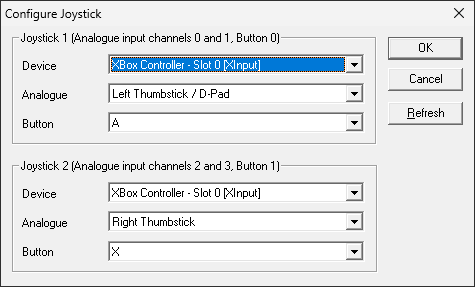

Joysticks and Game Controllers
BeebEm supports joysticks and game controllers via XInput and DirectInput, connected to the emulated BBC Micro's "analogue in" socket. Use the Options → Configure Joystick… menu item to configure the input devices.
The input controller can be set independently for the Beeb's Joystick 1 and Joystick 2. Joystick 1 uses the Beeb's analogue input channels 0 (X direction) and 1 (Y direction), and pushbutton 0. Joystick 2 uses the Beeb's analogue input channels 2 (X direction) and 3 (Y direction), and pushbutton 1.

Use the Device option to select the input controller device. The dialog box shows a list of the controllers that have been detected. Note that the same game controller may appear twice in the list, as both an XInput and a DirectInput device. If both are listed, choose the XInput version in preference to DirectInput.
Use the Analogue Input option to select the joystick or game controller input, or mousestick setting.
Select Analogue Mousestick to enable the mapping of mouse position to analogue Beeb joystick position. This allows you to use the mouse as a joystick.
Select Digital Mousestick to enable the mapping of mouse movements to digital Beeb joystick movements.
Use the Button Input option to select which of the controller's buttons are mapped to the Beeb's pushbutton inputs.
Press the Refresh button to update the list of avaialable input controllers, e.g., after plugging a joystick or game controller into the host PC.
Note that the Basic Hardware Only option disables the Analogue to Digital emulation, so this must be switched off if you want to use a game controller. See the Menu Options for more information.